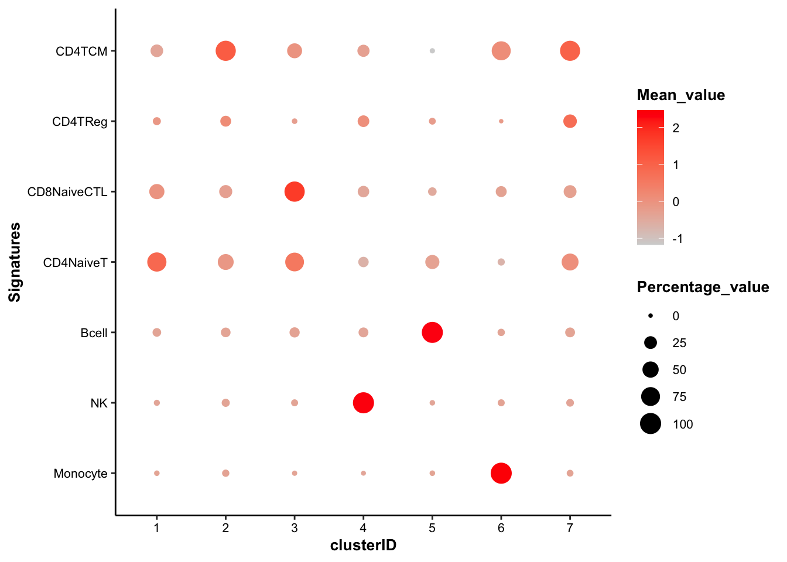
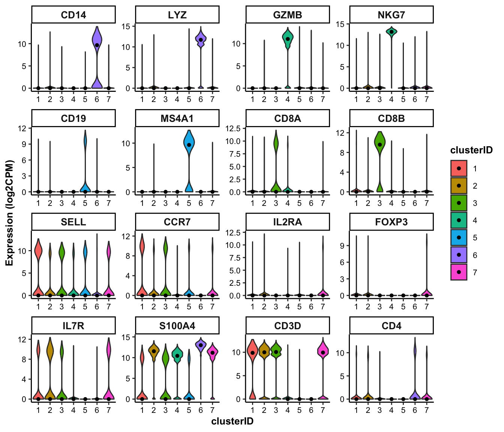
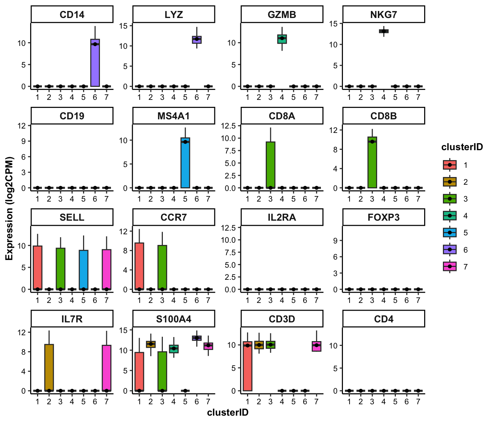
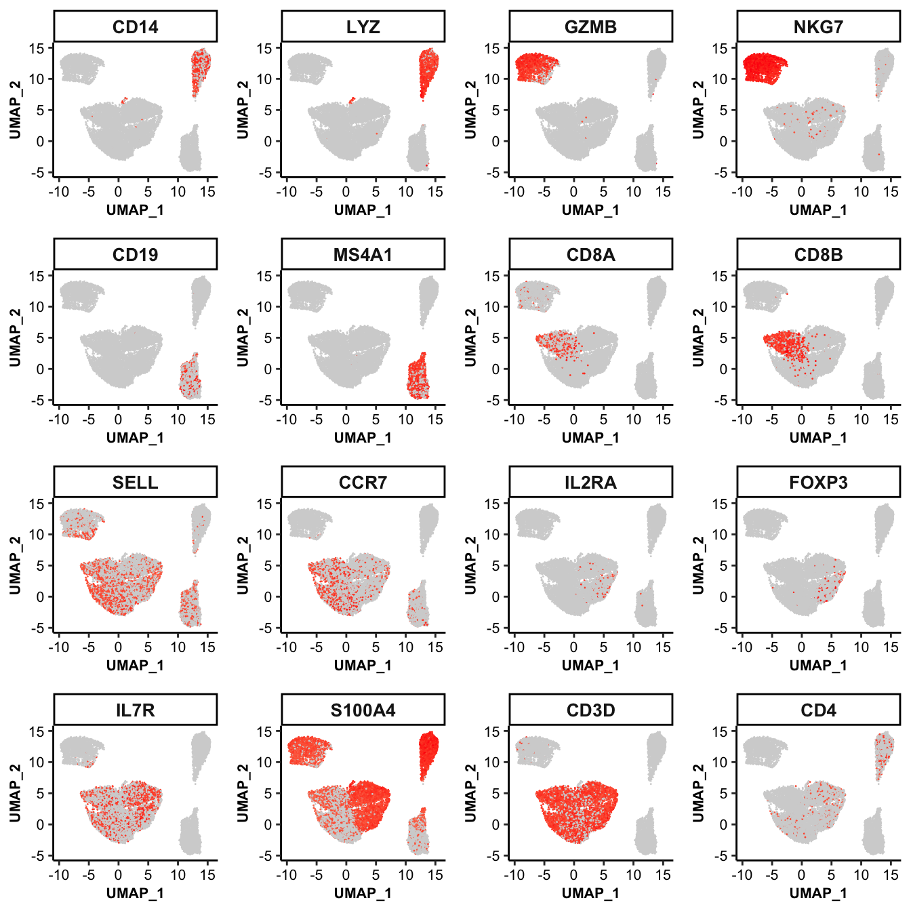
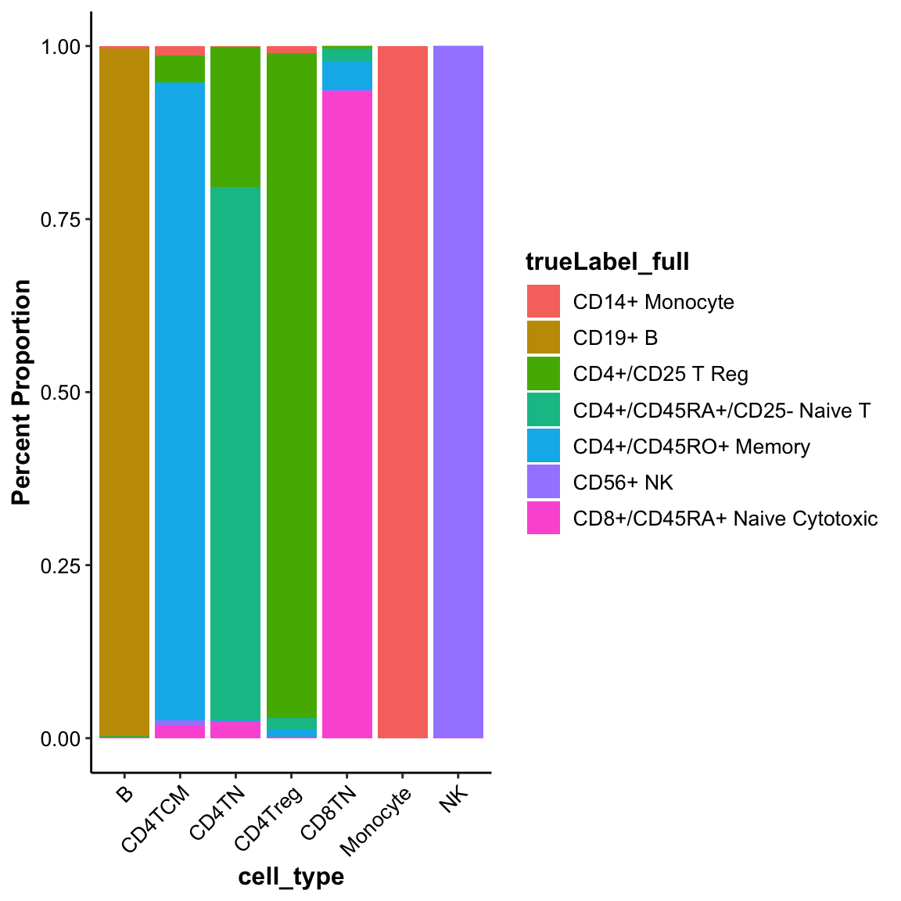

Chapter 8 Cell type annotation
Currently, there are two types of strategies to annotate the clusters: supervised and unsupervised. The supervised methods use a list of known markers of potential cell types curated from somoe existing studies of the same/similar contexts. While in contrast, the unsupervised methods are usually based on the differentially expressed genes. scMINER provide several useful functions to support both types of strategies.
8.1 Supervised cell type annotation
In the past a few years, the scRNA-seq data has dramatically increased in both quality and quantity. For the majority of tissue types, some existing studies on the same/similar tissue type are most likely available, and from these existing studies, we can figure out a list of candidate cell types to expect and curate a list of markers for each of them. In this case, we know the 7 cell types involved in the dataset, and curated a marker list from some existing PBMCs studies.
8.1.1 Annotate using signature scores
Given a marker list of candidate cell types, scMINER can estimate a signature score, which is mathematically the weighted mean of the expression of marker genes involved, for each candidate cell type across all cell cluster. To do so, you will need to generate a signature table with three columns:
signature_name: name of cell types/signatures;signature_feature: markers genes/features of corresponding cell type/signature;weight: weight of corresponding maker/feature in corresponding cell type/signature. It ranges from -1 to 1, so both positive and negtive markers are supoorted.
## Signature table of PBMC14k dataset
signature_table <- read.table(system.file("extdata/demo_pbmc14k/PBMC14k_signatureTable.txt", package = "scMINER"), header = TRUE, sep = "\t", quote = "", stringsAsFactors = FALSE)
head(signature_table)## signature_name signature_feature weight
## 1 Monocyte CD14 1
## 2 Monocyte LYZ 1
## 3 Monocyte S100A8 1
## 4 Monocyte S100A9 1
## 5 Monocyte S100A12 1
## 6 NK FCGR3A 1With this signature table, draw_bubbleplot() can estimate the signature scores and visualize them using bubble plot:
## Violin plot of marker genes across clusters
draw_bubbleplot(input_eset = pbmc14k_log2cpm.eset, signature_table = signature_table, group_by = "clusterID")## 31 features of 7 signatures were found in the input eset and will be used in calculation. In the bubble plot above, the color of the bubbles is proportional to the mean of signature score, and the size of the bubbles is proportional to the percentage of cells with higher signature score than mean. The cell type of each cluster is clear, except the cluster 7, which shows equally-high signature score of both CD4+ TCM and CD4+ Reg and higher percentage of CD4+ TCM cells.
8.1.2 Annotate using individual marker genes
scMINER also provides a variety of functions to visualize the selected features:
## For the demonstration purposes, we picked two well known markers for each of the 7 known cell types, plus "CD3D" and "CD4".
genes_of_interest <-c("CD14", "LYZ", "GZMB", "NKG7", "CD19", "MS4A1", "CD8A", "CD8B", "SELL", "CCR7", "IL2RA", "FOXP3", "IL7R", "S100A4", "CD3D", "CD4")8.1.2.1 feature visualization: violin plot
## Violin plot of marker genes across clusters
feature_vlnplot(input_eset = pbmc14k_log2cpm.eset, features = genes_of_interest, group_by = "clusterID", ncol = 4)
8.1.2.2 feature visualization: box plot
## Box plot of marker genes across clusters
feature_boxplot(input_eset = pbmc14k_log2cpm.eset, features = genes_of_interest, group_by = "clusterID", ncol = 4)
8.1.2.3 feature visualization: scatter plot
## UMAP scatter plot of marker genes
feature_scatterplot(input_eset = pbmc14k_log2cpm.eset, features = genes_of_interest, ncol = 4, location_x = "UMAP_1", location_y = "UMAP_2", point.size = 0.5, legend.key_height = 0.3, legend.key_width = 0.2, fontsize.legend_title = 8, fontsize.legend_text = 6, fontsize.axis_title = 8, legend.position = "none")
8.2 Unsupervised cell type annotation
Existing studies in the same or similar contexts are not always available, and there is a significant concern regarding the reliability of reference studies. This reliability largely depends on the expertise of the original authors who defined the markers and assigned the cell types. Therefore, we strongly encourage users to also try unsupervised methods, which can serve as a means of cross-validation.
scMINER provides a function, getDE(), to perform the differential expression analysis and identify the markers of each cluster. The getDE() function supports three different methods to perform the differential expression analysis, limma, wilcoxon and t.test. And it allows the users to define the groups to compare in a flexible way:
## 1. To perform differential expression analysis in a 1-vs-rest manner for all groups
de_res1 <- getDE(input_eset = pbmc14k_log2cpm.eset[500,], group_by = "clusterID", use_method = "limma")## 7 groups were found in group_by column [ clusterID ].
## Since no group was specified, the differential analysis will be conducted among all groups in the group_by column [ clusterID ] in the 1-vs-rest manner.
## 1 / 7 : group 1 ( 1 ) vs the rest...
## 2505 cells were found for g1.
## 11100 cells were found for g0.
## 2 / 7 : group 1 ( 2 ) vs the rest...
## 2022 cells were found for g1.
## 11583 cells were found for g0.
## 3 / 7 : group 1 ( 3 ) vs the rest...
## 2014 cells were found for g1.
## 11591 cells were found for g0.
## 4 / 7 : group 1 ( 4 ) vs the rest...
## 1918 cells were found for g1.
## 11687 cells were found for g0.
## 5 / 7 : group 1 ( 5 ) vs the rest...
## 1912 cells were found for g1.
## 11693 cells were found for g0.
## 6 / 7 : group 1 ( 6 ) vs the rest...
## 1786 cells were found for g1.
## 11819 cells were found for g0.
## 7 / 7 : group 1 ( 7 ) vs the rest...
## 1448 cells were found for g1.
## 12157 cells were found for g0.## feature g1_tag g0_tag g1_avg g0_avg g1_pct g0_pct
## 1 WARS2 1 2,3,4,5,6,7 0.06138941 0.08788168 0.006387226 0.009459459
## 2 WARS2 2 1,3,4,5,6,7 0.10111067 0.07984299 0.010880317 0.008547009
## 3 WARS2 3 1,2,4,5,6,7 0.05065012 0.08862547 0.005461768 0.009490122
## 4 WARS2 4 1,2,3,5,6,7 0.18132487 0.06686798 0.019812304 0.007101908
## 5 WARS2 5 1,2,3,4,6,7 0.06802986 0.08545233 0.007322176 0.009150774
## 6 WARS2 6 1,2,3,4,5,7 0.02777264 0.09134997 0.002799552 0.009814705
## log2FC Pval FDR Zscore
## 1 -0.02649227 1.723054e-01 1.723054e-01 -1.3648335
## 2 0.02126768 3.146256e-01 3.146256e-01 1.0055634
## 3 -0.03797535 7.302737e-02 7.302737e-02 -1.7926596
## 4 0.11445690 1.177839e-07 1.177839e-07 5.2969020
## 5 -0.01742247 4.209200e-01 4.209200e-01 -0.8048261
## 6 -0.06357732 4.315054e-03 4.315054e-03 -2.8541619Here is an brief introduction to the results of getDE():
- feature: feature name;
- g1_tag: a vector of clusters or subgroups involved in g1, the fore-ground group;
- g0_tag: a vector of clusters or subgroups involved in g0, the back-ground group;
- g1_avg: mean of gene expression of cells in g1;
- g0_tag: mean of gene expression of cells in g0;
- g1_pct: percentage of cells expressing the corresponding genes in group 1;
- g0_pct: percentage of cells expressing the corresponding genes in group 0;
- log2FC: log2Fold change of gene expression between g1 and g0;
- Pval: P values of g1-g0 comparison;
- FDR: FDR of g1-g0 comparison;
- Zscore: Z score of g1-g0 comparison, signed by
log2FC;
## 2. To perform differential expression analysis in a 1-vs-rest manner for one specific group
de_res2 <- getDE(input_eset = pbmc14k_log2cpm.eset, group_by = "clusterID", g1 = c("1"), use_method = "limma")
## 3. To perform differential expression analysis in a rest-vs-1 manner for one specific group
de_res3 <- getDE(input_eset = pbmc14k_log2cpm.eset, group_by = "clusterID", g0 = c("1"), use_method = "limma")
## 4. To perform differential expression analysis in a 1-vs-1 manner for any two groups
de_res4 <- getDE(input_eset = pbmc14k_log2cpm.eset, group_by = "clusterID", g1 = c("1"), g0 = c("3"), use_method = "limma")scMINER also provides a function, getTopFeatures(), to easily extract the group-specific markers from the differential expression result:
cluster_markers <- getTopFeatures(input_table = de_res1, number = 10, group_by = "g1_tag", sort_by = "log2FC", sort_decreasing = TRUE)
dim(cluster_markers)## [1] 7 11## feature g1_tag g0_tag g1_avg g0_avg g1_pct g0_pct
## 1 WARS2 1 2,3,4,5,6,7 0.06138941 0.08788168 0.006387226 0.009459459
## 2 WARS2 2 1,3,4,5,6,7 0.10111067 0.07984299 0.010880317 0.008547009
## 3 WARS2 3 1,2,4,5,6,7 0.05065012 0.08862547 0.005461768 0.009490122
## 4 WARS2 4 1,2,3,5,6,7 0.18132487 0.06686798 0.019812304 0.007101908
## 5 WARS2 5 1,2,3,4,6,7 0.06802986 0.08545233 0.007322176 0.009150774
## 6 WARS2 6 1,2,3,4,5,7 0.02777264 0.09134997 0.002799552 0.009814705
## log2FC Pval FDR Zscore
## 1 -0.02649227 1.723054e-01 1.723054e-01 -1.3648335
## 2 0.02126768 3.146256e-01 3.146256e-01 1.0055634
## 3 -0.03797535 7.302737e-02 7.302737e-02 -1.7926596
## 4 0.11445690 1.177839e-07 1.177839e-07 5.2969020
## 5 -0.01742247 4.209200e-01 4.209200e-01 -0.8048261
## 6 -0.06357732 4.315054e-03 4.315054e-03 -2.85416198.3 Add cell type annotations to SparseExpressionSet object
Based on the supervised and unsupervised methods, we have annotated the cell types for each cluster. To add the cell type annotation information into the sparse eset object:
celltype_map <- c(`1`="CD4TN", `2`="CD4TCM", `3`="CD8TN", `4`="NK", `5`="B", `6`="Monocyte", `7`="CD4Treg")
pbmc14k_log2cpm.eset$cell_type <- as.character(celltype_map[pbmc14k_log2cpm.eset$clusterID])
head(pData(pbmc14k_log2cpm.eset))## trueLabel_full trueLabel projectID nUMI nFeature pctMito
## CACTTTGACGCAAT CD14+ Monocyte Monocyte PBMC14k 764 354 0.01832461
## GTTACGGAAACGAA CD14+ Monocyte Monocyte PBMC14k 956 442 0.01569038
## CACTTATGAGTCGT CD14+ Monocyte Monocyte PBMC14k 629 323 0.02066773
## GCATGTGATTCTGT CD14+ Monocyte Monocyte PBMC14k 875 427 0.02628571
## TAGAATACGTATCG CD14+ Monocyte Monocyte PBMC14k 1060 445 0.03207547
## CAAGAAGACCCTCA CD14+ Monocyte Monocyte PBMC14k 849 384 0.01531213
## pctSpikeIn CellID UMAP_1 UMAP_2 clusterID cell_type
## CACTTTGACGCAAT 0 CACTTTGACGCAAT 14.91650 13.04096 6 Monocyte
## GTTACGGAAACGAA 0 GTTACGGAAACGAA 14.57031 10.27093 6 Monocyte
## CACTTATGAGTCGT 0 CACTTATGAGTCGT 14.28869 13.61674 6 Monocyte
## GCATGTGATTCTGT 0 GCATGTGATTCTGT 14.12546 13.36319 6 Monocyte
## TAGAATACGTATCG 0 TAGAATACGTATCG 14.91227 11.19407 6 Monocyte
## CAAGAAGACCCTCA 0 CAAGAAGACCCTCA 15.34154 12.25821 6 MonocyteThe draw_barplot() function can visualize the cell composition of self-defined groups. We can use it to show the purity of MICA clusters:
## Violin plot of marker genes across clusters
draw_barplot(input_eset = pbmc14k_log2cpm.eset, group_by = "cell_type", color_by = "trueLabel_full", xlabel.angle = 45)
Don’t forget to save the SparseEset object after the cell type annotation added.